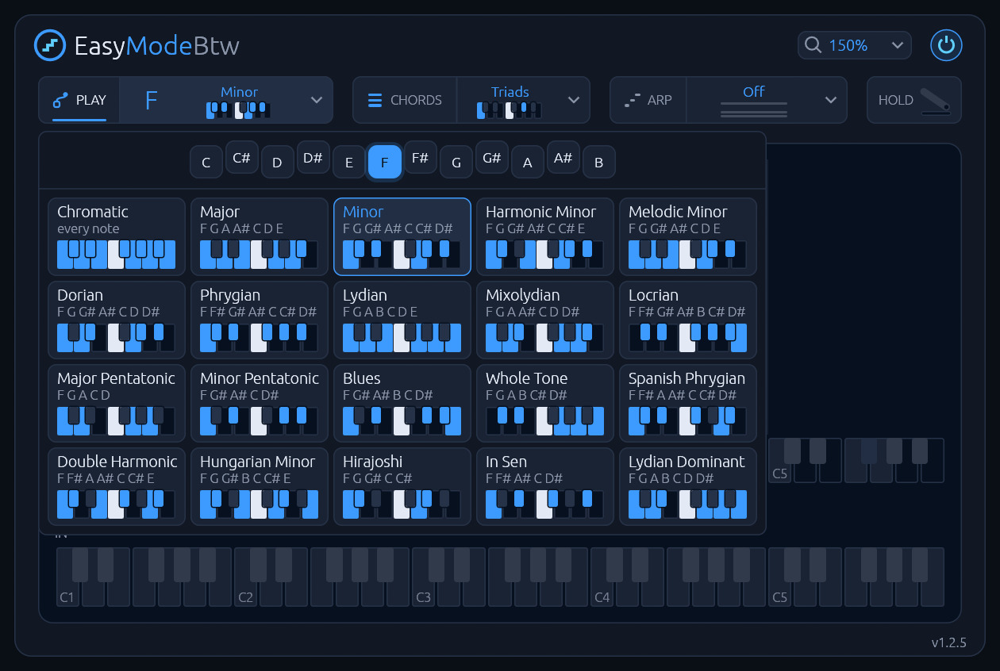

Pick F minor, and the white keys from C3 upwards play F G Ab Bb C Db Eb F. Put EasyModeBtw in front of any instrument and you can't play a wrong note. Turn on CHORDS and every white key plays the scale's chord on its note; turn on the strum or the ARP and those chords come out one note at a time. It works like the Easy Mode of Native Instruments' Smart Play. It has no audio inputs or outputs: it only rewrites MIDI notes.
It runs natively on Linux, with no network access and no telemetry.
Read the manual for every control and how to use it.
Screenshots



What it's for
Features
- 20 scales on 12 keys: Chromatic, Major, Natural, Harmonic and Melodic Minor, Dorian, Phrygian, Lydian, Mixolydian, Locrian, Major and Minor Pentatonic, Blues, Whole Tone, Spanish Phrygian, Double Harmonic, Hungarian Minor, Hirajoshi, In Sen and Lydian Dominant.
- Chords on every key: Triads, Sevenths, Sus2, Sus4, Add9 or Power, or the chord Jazz, Bossa, Soul or Folk most often puts on that note. Or Thirds, Sixths and Octaves: each key's note with one partner above it, for a harmonised melody. The black keys play borrowed major chords.
- A key map that suggests: each key names the chord it plays, and three good chords to play next light up.
- Strum: a chord's notes start one after another, up to 100 ms, up and down in turn, one way, or each strum at random. No added latency.
- Arpeggiator on the host's beat: eight patterns, from Up and Down to a pop-piano figure, 1/4 to 1/32 with dotted and triplet rates, up to 4 repeats climbing an octave or up the scale, swing, stairs that show what it plays, and a rhythm ring of up to 32 steps with a shelf of 26 rhythms, whose steps can roll two to four times.
- HOLD on a sustain pedal: let go and what the keys play goes on, in every mode.
- See what you play: the PLAY page draws a thread from every key you hold to the notes it sends. Click the keys with the mouse to try everything without a keyboard.
- No stuck notes: a note-off always ends the notes its note-on started, even if you change the key, scale or chords while holding it.
- Everything else passes through: pitch bend, mod wheel and other CCs, channel pressure and program changes are untouched.
- Zoom from 100 to 200 %.
- No network access and no telemetry.
Install
Download the latest version from the Releases page, or with these commands:
curl -LO https://github.com/jelly-comet/EasyModeBtw-release/releases/download/v1.2.6/EasyModeBtw-1.2.6-linux-x86_64.tar.gz
curl -LO https://github.com/jelly-comet/EasyModeBtw-release/releases/download/v1.2.6/EasyModeBtw-1.2.6-linux-x86_64.tar.gz.sha256
sha256sum -c EasyModeBtw-1.2.6-linux-x86_64.tar.gz.sha256 && tar xzf EasyModeBtw-1.2.6-linux-x86_64.tar.gz
cd EasyModeBtw-1.2.6-linux-x86_64
Install for your user:
mkdir -p ~/.clap
rm -f ~/.clap/easymodebtw.clap && cp easymodebtw.clap ~/.clap/
Or for all users:
sudo mkdir -p /usr/lib/clap
sudo rm -f /usr/lib/clap/easymodebtw.clap && sudo cp easymodebtw.clap /usr/lib/clap/
Removing the old copy first avoids overwriting a file a running host has loaded. Then rescan plugins in your DAW.
To uninstall:
rm -f ~/.clap/easymodebtw.clap
FAQ
Is it free?
Yes. The download is free and MIT-licensed.
Is there a VST3 or LV2 version?
No. Releases contain the CLAP plugin only.
Does it run on ARM, like a Raspberry Pi or Apple Silicon?
No. It needs Linux on x86-64, on a CPU with AVX2.
Which hosts does it work in?
A CLAP host that takes a note effect in front of an instrument. It was tried in REAPER.
Does it work on Wayland?
Through XWayland. The editor also needs a Vulkan driver.
Does it make sound?
No. It only rewrites MIDI notes and has no audio inputs or outputs. Put it in front of an instrument.
What's new in v1.2.6
14 Nov 2026 · Release on GitHub
EasyModeBtw 1.2.6 is built for newer CPUs.
- It needs a CPU with AVX2 now (Intel Core from 2013, AMD from 2015). On an older CPU, stay with 1.2.5.
- Nothing played or drawn changes.
Earlier versions
v1.2.5 13 Nov 2026
EasyModeBtw 1.2.5 brings six more scales, melodies in thirds, sixths and octaves, and steps that roll.
- Six more scales: Spanish Phrygian (Phrygian dominant, flamenco's scale), Double Harmonic, Hungarian Minor, Hirajoshi and In Sen (two Japanese five-note scales) and Lydian Dominant, after Whole Tone in the list. The fourteen before them are where they were, so a saved project and its automation keep their scale. In Double Harmonic and Hungarian Minor a few chords have no name: their keys show the notes they play.
- Thirds, Sixths and Octaves: three more CHORDS choices that play a key's own note with one partner above it, for a melody that comes out harmonised: the third or the sixth from the scale, or the octave. A black key takes a major third or a major sixth. With the strum on, the partner follows like a grace note, and the arp runs over the two.
- Rolls: right-click a step of the arp's ring that plays, and it plays its note two, three or four times in its own length; after four, once again. With ARP on Chord the whole chord is struck again, strummed each time if the strum is on. Saved with the rhythm; a project saved before plays every step once, as it did.
- The key map no longer lights the last chord's key as held while you hold notes that are no chord.
- The CHORDS and ARP pages draw as cheaply with Thirds, Sixths or Octaves as with any other chords.
v1.2.0 9 Nov 2026
EasyModeBtw 1.2 strums at random, holds in every mode and swings.
- Random strum: a dice in the direction select sends each strum up or down at random, over the length you set. With ARP on Chord each step tosses its own.
- HOLD everywhere: the sustain pedal moved to the selector row, on every page, and works in every mode. With ARP Off, notes and chords you let go play on until your next press with every key up.
- SWING for the arp: Off, or 54 % to 71 %, right of GATE LENGTH.
- 26 rhythms: a second row on the shelf, thirteen more, from Cumbia (4 steps) to Central Africa (16).
- Click the dots under the stairs to add a step to the rhythm or take it out.
- Tooltips on every control, and on each rhythm of the shelf, saying where it comes from.
- In chord mode the arp starts with the key: a chord pressed with nothing else held plays at once, where it waited 30 ms.
- The window rests while nothing moves: a key held on and on no longer redraws the same picture.
- Changed: the strum's voicing select is gone. Chords always lie Close, in root position on the note the key plays alone, so a project saved on Guitar now plays Close.
- Changed: a project saved with HOLD on and ARP Off now holds its notes.
- Changed: with ARP Off the ARP page's keys are off, as the CHORDS page's are with CHORDS Off.
v1.1.0 8 Nov 2026
EasyModeBtw 1.1 has a new ARP page, and chords that play where you expect them.
- New ARP page: stairs show what the arp plays over one turn of its rhythm, with RATE, RANGE, STEP and GATE LENGTH in their header. Rhythms are a shelf of tiny rings: hover one to see it, click to load it. The key map can be played here too, and HOLD is a sustain pedal beside it.
- Selector row: PLAY sits on the key and scale selector, CHORDS and ARP on their own. A click on an icon or caption shows that page; the page select in the header is gone.
- Lists of tiles: scales and chord sets show a little keyboard, arp orders their stairs, and each performs when you hover it.
- Bigger window: 840 x 564.
- Key map: the suggested chords are named after NEXT, a click plays in the octave of the last note you played, and where a white and a black key play one chord the white one lights.
- Changed: chords now play in root position on the note the key plays alone, the same notes the arp plays from. They used to gather around middle C and could sound an octave low. They no longer move in small steps from the chord before, so a project using CHORDS sounds different.
- Changed: GATE LENGTH, LENGTH in 1.0, reads in percent of a step and goes up to 100 %. A project saved above that keeps its value until you touch the control.
- Changed: a new instance starts on Chromatic, so every key plays its own note until you pick a scale. A saved project keeps its scale.
v1.0.0 7 Nov 2026
EasyModeBtw 1.0 turns the scale mapper into a chord, strum and arpeggio player.
- Chords: CHORDS makes each key play a chord of the scale (Triads, Sevenths, Sus2, Sus4, Add9, Power), or the chord a genre most often puts there (Jazz, Bossa, Soul, Folk). Black keys play borrowed major chords. Chords are voiced to move as little as they can.
- Strum: a chord's notes start one after another like a guitarist's (up to 100 ms), up and down in turn or one way, Close or Guitar voicing. Adds no latency.
- Arpeggiator: ARP plays a key's note or chord on the host's beat: Up, Down, Up-Down, Converge, As Played, Chord, Random or Piano, with RATE, RANGE, STEP, LENGTH, HOLD and a 16-step ring with rhythm presets.
- New editor: 680 x 480 with PLAY, CHORDS and ARP pages, a key map naming each key's chord and suggesting three to play next, a chord roll, a strum display, and a zoom from 100 to 200 %. Keys on the key map and the PLAY keyboard can be played with the mouse.
- Automation on time: KEY, SCALE, CHORDS and ARP changes take effect at their own sample, not at the start of the audio block.
- Changed: with SCALE on Chromatic every key now plays, black ones too (until now black keys were silent and white keys walked up by semitones), so a project saved with Chromatic plays differently. Everything else in a saved project sounds as before: CHORDS and ARP start off. Clicking the keyboard no longer picks the root.
- CLAP only: this release has no VST3. A VST3 from an earlier release keeps working but no longer updates; a project using it takes the CLAP in its place. To remove the old copy:
rm -rf ~/.vst3/easymodebtw.vst3(orsudo rm -rf /usr/lib/vst3/easymodebtw.vst3).
v0.1.5 2 Nov 2026
The logo in the editor now opens the plugin's page, https://jelly-comet.github.io/plugins/easymodebtw/. Nothing else changed from 0.1.4.
v0.1.4 2 Nov 2026
The logo in the editor now opens this repository at its new address: the GitHub account was renamed to rmnhofma. Nothing else changed from 0.1.3.
v0.1.3 2 Nov 2026
First release from this repository: the CLAP and VST3 plugins for Linux x86-64, glibc 2.31 or newer.
- The logo in the editor opens this repository.
- Archives contain only the plugins, their licenses and install instructions. The Standalone app is no longer included.
License
MIT, see LICENSE. The licenses of the third-party code in the binaries are in
THIRD-PARTY-LICENSES.txt in each release archive.
VST is a registered trademark of Steinberg Media Technologies GmbH. CLAP is an open standard by the free-audio project. Smart Play is a product feature of Native Instruments. EasyModeBtw is an independent project, not affiliated with or endorsed by Native Instruments.